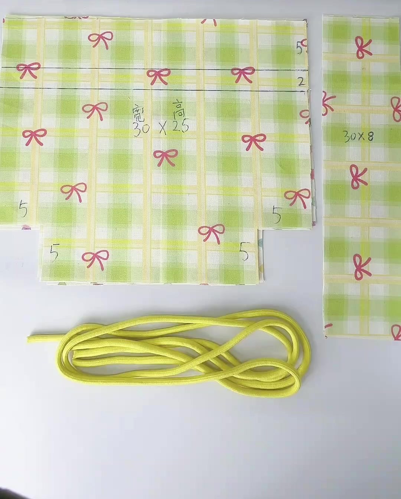

đường cắt
đường may (cách mép 1 cm)
đường gấp
vạch bút bay màu
kích thước
lại mũi
chỗ để hở
cắt bỏ
chân quai

Video 0:05| Chi tiết | SL | Kích thước cắt | Đánh dấu & ghi chú |
|---|---|---|---|
| a Thân vải ngoài | 2 | 30 × 25 cm · khoét góc 5 × 5 | Mặt phải: vạch A 5 cm, vạch B 7 cm, tâm và 2 mốc 6 cm; khe dây 2 cm ở cả 2 sườn. |
| b Thân vải lót | 2 | 30 × 25 cm · khoét góc 5 × 5 | Không kẻ vạch. Chỉ đánh dấu khe lộn 8–10 cm (1 mảnh). |
| c Quai | 2 | 30 × 8 cm (vải ngoài) | Gấp 4 lớp thành dải 2 × 30 cm. Không cần vắt sổ. |
| d Dây rút | 2 | 80 cm/sợi · Ø 4–6 mm | Mua tổng 1,6 m. Dây polyester: hơ lửa đầu dây cho khỏi tưa. |